此篇记录购买使用腾讯云服务器的过程
购买
系统
服务器的操作系统选择的是Centos 7.6
购买流程
- 购买服务器
- 购买域名
- 备案
登陆
通过重置腾讯云默认密码后，可以在腾讯云的webshell进行登陆
也可以通过ssh进行登录
ssh登陆
我使用的是Microsoft Store下载的Windows Terminal
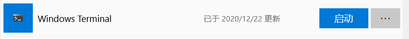
这个控制台内置了ssh的功能
因此可以通过
ssh root@公网ip地址进行登陆，同时输入密码
安全设置
创建新用户
这里用户名用myuser来指代
输入指令
adduser myuserpasswd myuser
这时候会要求输入两次密码：
Changing password for user myuser.
New password:
Retype new password:
passwd: all authentication tokens updated successfully.
即可
授权
授权新创建的myuser能够sudo成超级用户的权限
首先查找sudoers文件的位置
1 | [root@VM-0-11-centos ~]# whereis sudoers |
查看当前sudoers文件的权限
1 | [root@VM-0-11-centos ~]# ls -l /etc/sudoers |
由于该文件是只读文件，因此先修改文件权限为可写
1 | [root@VM-0-11-centos ~]# chmod -v u+w /etc/sudoers |
打开文件，追加新增用户
1 | vim /etc/sudoers |
按i进行编写模式
在文件中找到这个位置
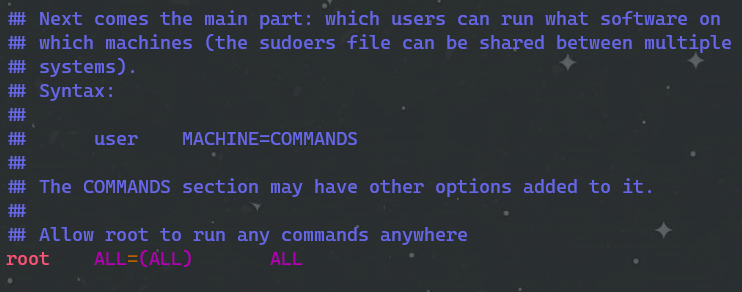
在root ALL=(ALL) ALL位置下面添加我们新的用户
1 | myuser ALL=(ALL) ALL |
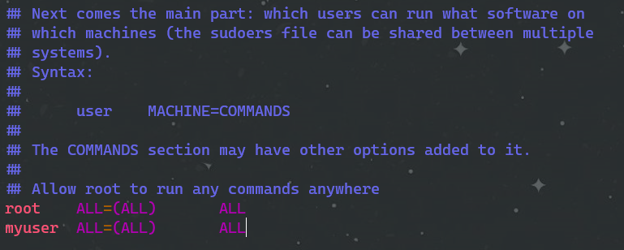
如果嫌每次切换成超级用户都要输密码麻烦的话，可以这样修改
即将刚刚那条语句改成
1 | myuser ALL=(ALL) NOPASSWD:ALL |
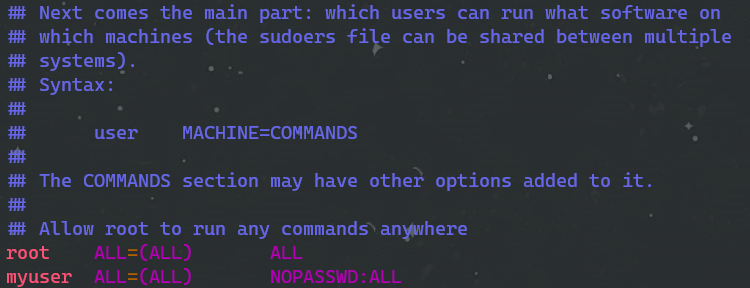
保存后退出（按esc退出编写模式，按:wq进行退出保存）
这时候就可以尝试进行切换
当sudo su切换回超级用户时，输入的密码是myuser的密码，不是root的密码（如果弄成免密切换的话，就不需要输入密码）
1 | su mysuer |
将写权限收回
1 | [root@VM-0-11-centos /]# chmod -v u-w /etc/sudoers |
禁止root用户远程登陆
编辑ssh配置文件
1 | [root@VM-0-11-centos /]# vim /etc/ssh/sshd_config |
寻找到PermitRootLogin
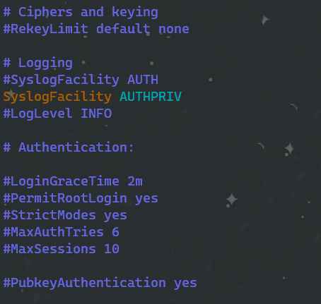
可通过/PermitRootLogin快速定位
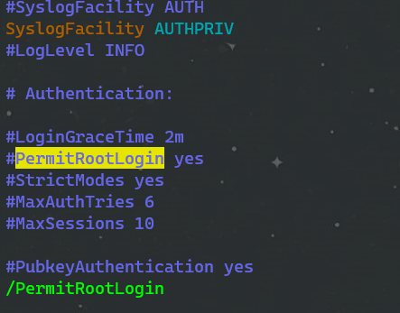
取消注释，并将yes改成no
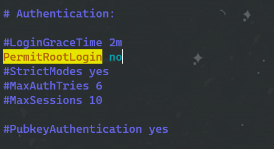
保存退出
重启服务
1 | [root@VM-0-11-centos /]# systemctl restart sshd.service |
这样就不能用root用户进行ssh远程登陆
因此得先用刚刚新创建的myuser用户进行远程登陆：
ssh myuser@公网ip地址
输入密码
再sudo su切换到超级用户
配置密钥登陆
通过密钥登陆就省得每次登陆都输入密码了
原理介绍：
公钥添加到服务器的某个账户上
私钥放在客户端
客户端利用私钥即可完成认证并登陆
- 没有私钥，任何人都无法通过 SSH 暴力破解密码来远程登录到系统
- 如果将公钥复制到其他账户甚至主机，利用私钥也可以登录
操作大体流程：
- 主机A（客户端）创建公钥私钥
- 将公钥复制到主机B（被登陆机）的指定用户下
- 主机A使用保存私钥的用户登录到主机B对应保存公钥的用户
参考来自Linux密钥登录原理和ssh使用密钥实现免密码登陆
详细流程：
在本地客户端生成公钥私钥
有几种方法去生成公钥私钥：
1.安装git bash。官网地址git bash
2.在Microsoft Store安装terminal
3.使用putty
这里使用terminal
输入
1 | ssh-keygen |
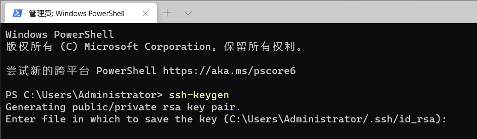
然后连续按3次回车，因为我们不为其设置密码
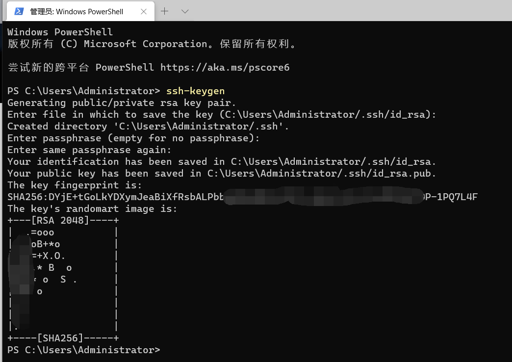
这样就生成了公钥和私钥
进入上面生成的目录“C:\Users\Administrator/.ssh”即可看到
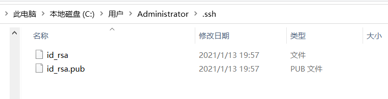
将公钥拷贝到服务器
使用git bash输入
1 | ssh-copy-id -i ~/.ssh/id_rsa.pub myuser@123.123.123.123 |
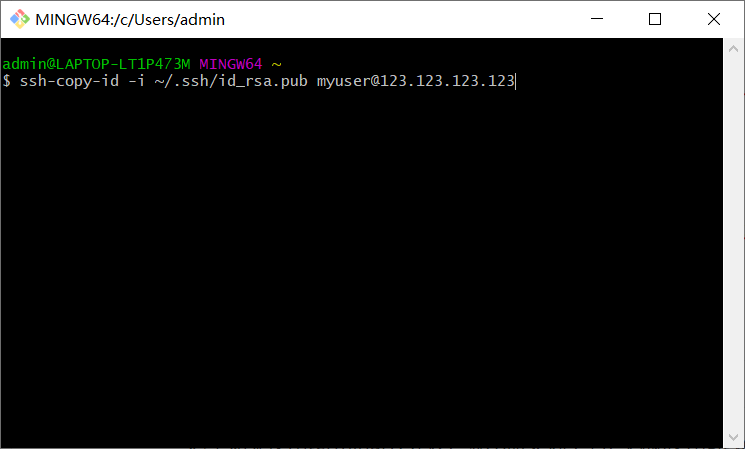
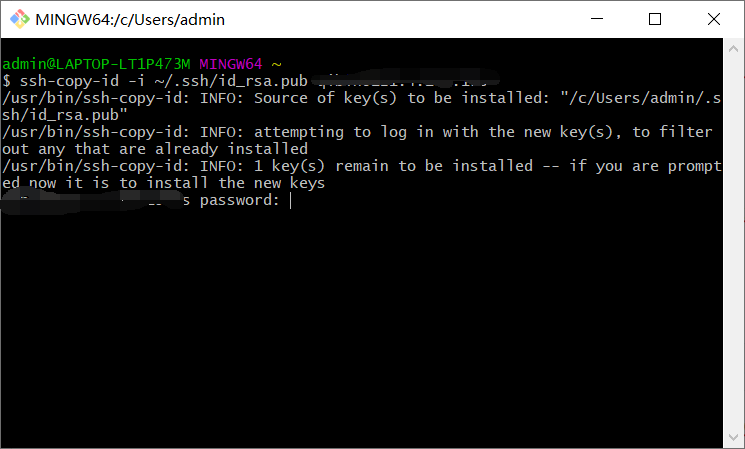
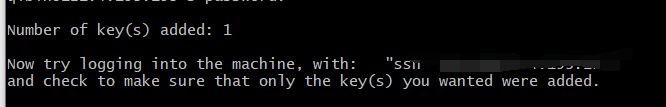
这里如果使用terminal会失败，显示命令找不到，因此使用git bash进行
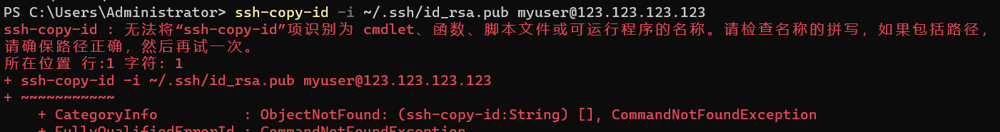
同时注意我们已经把root用户给禁止用ssh登陆了，所以我们写我们创建的普通用户
至此已经将公钥拷到服务器了，可以直接进行ssh登陆，而不用输入密码
1 | ssh myuser@123.123.123.123 |
但是还需要输入用户名和ip地址这一大串挺麻烦的
因此我们到目录“C:\Users\你的电脑用户名/.ssh”中，新建一个config文件

在里面输入
1 | Host 登陆别名 |
例如
1 | Host freestyle |
同时还可以在下面另起一行，意思为间隔120s发送keepalive请求，防止自动断线
1 | ServerAliveInterval 120 |
最终效果如下
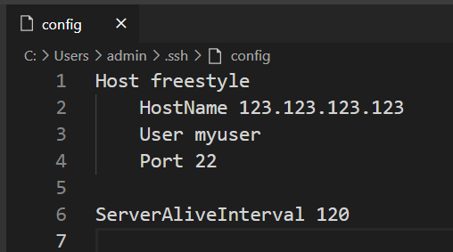
这样我们可以在终端输入
1 | ssh freestyle |
进行登录了
文件传输
这里文件传输使用的是WinSCP
用WinSCP与我们服务器相连
Linux scp 命令用于 Linux 之间复制文件和目录。
scp 是 secure copy 的缩写, scp 是 linux 系统下基于 ssh 登陆进行安全的远程文件拷贝命令。
scp 是加密的，rcp 是不加密的，scp 是 rcp 的加强版。
参考来自菜鸟教程
打开程序
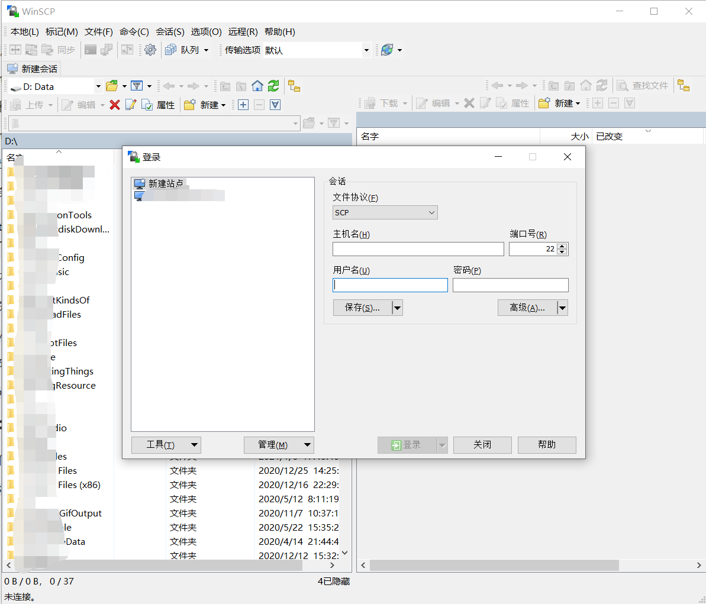
点击新建站点
文件协议选择SCP
输入主机名：即ip地址、
输入端口号：默认22号（若修改过则更改，具体依照服务器ssh的端口号）
输入用户名：即要登陆的用户，例如root，但是我们已经禁止用root进行ssh登陆了，所以我们输入创建的普通用户myuser
输入密码：即对应的密码
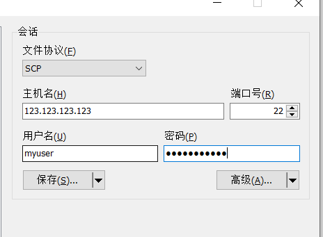
点击保存并确定

这是后双击或者点击登陆即可登陆
由于是普通用户而不是超级用户，因此对于文件的操作可能会受限。所以通过修改设置来使其切换成超级用户
在登陆界面点击编辑
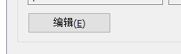
点击高级

在SFTP中协议选项中的SFTP服务器输入：
1 | sudo su -c /bin/sftp-server |
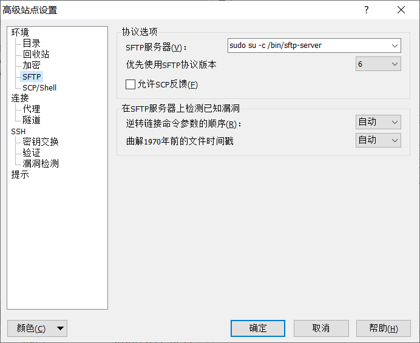
在SCP/Shell中的Shell中添加
1 | sudo su - |
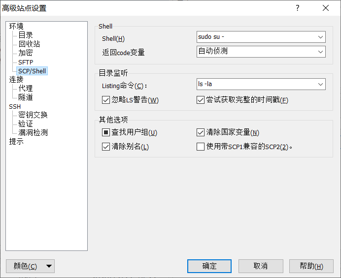
确定并保存
以上就完成了使用scp进行文件的传输
当然也可以通过ssh的密钥方式进行认证登录，这里就不进行设置
环境搭建
python环境
查看python版本
1 | [qibin@VM-0-11-centos ~]$ python -V |
可以看到已经预装了
1 | Python 2.7.5 |
所以就不去折腾下载python3更高的版本了
升级pip版本
先看看当前pip版本
1 | [qibin@VM-0-11-centos ~]$ pip3 show pip |
升级pip
1 | [qibin@VM-0-11-centos ~]$ sudo python3 -m pip install --upgrade pip |
virtualenv环境
参考资料廖雪峰教程-virtualenv
安装包
1 | pip3 install virtualenv --user |
创建对应项目的虚拟环境
1 | [qibin@VM-0-11-centos ~]$ pwd |
进入该环境
1 | [qibin@VM-0-11-centos wechat-project]$ ls venv/ |
下载需要的库
1 | (venv) [qibin@VM-0-11-centos wechat-project]$ python3 -m pip install werobot -i https://pypi.tuna.tsinghua.edu.cn/simple |
退出环境
1 | (venv) [qibin@VM-0-11-centos wechat-project]$ deactivate |
pip镜像下载
pip --default-timeout=100 install 库名 -i http://pypi.douban.com/simple/ --trusted-host pypi.douban.com